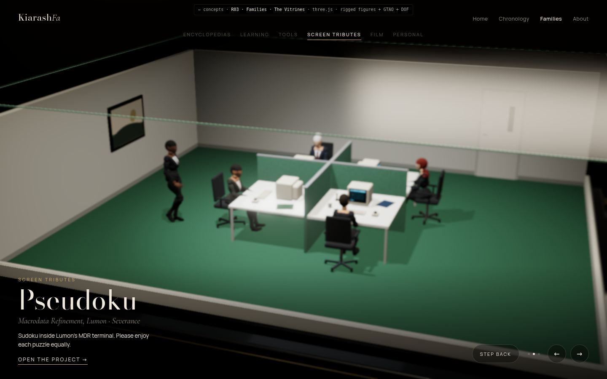

The Vitrines
A row of cases in a dark gallery; look closer.
A row of cases in a dark gallery; look closer.

The Specimen
One case in daylight; rooms rise from the plinth.
One case in daylight; rooms rise from the plinth.

The Glass House
One floor per title; ride between them.
One floor per title; ride between them.